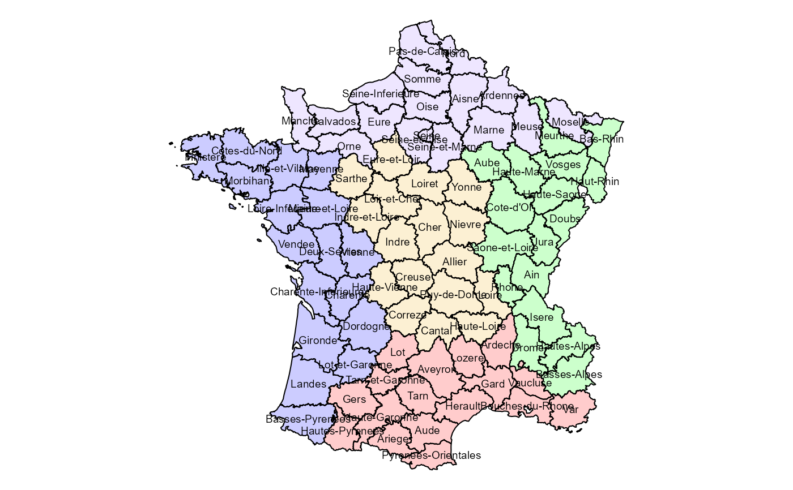

Map of France in 1830 with the Guerry data, excluding Corsica
gfrance85.Rdgfrance85 is a SpatialPolygonsDataFrame object created with the
sp package, containing the polygon boundaries of the map of
France as it was in 1830, together with the Guerry
data frame. This version excludes Corsica, which is an outlier
both in the map and in many analyses.
Usage
data(gfrance85)Format
The format is:
Formal class 'SpatialPolygonsDataFrame' [package "sp"] with 5 slots: gfrance85@data,
gfrance85@polygons, gfrance85@plotOrder, gfrance85@bbox, gfrance85@proj4string.
See: SpatialPolygonsDataFrame for descriptions of some components.
The analysis variables are described in Guerry.
Source
Friendly, M. (2007). Supplementary materials for Andr?-Michel Guerry's Moral Statistics of France: Challenges for Multivariate Spatial Analysis, http://datavis.ca/gallery/guerry/.
References
Dray, S. and Jombart, T. (2009). A Revisit Of Guerry's Data: Introducing Spatial Constraints In Multivariate Analysis. Unpublished manuscript.
Friendly, M. (2007). A.-M. Guerry's Moral Statistics of France: Challenges for Multivariable Spatial Analysis. Statistical Science, 22, 368-399.
Examples
data(gfrance85)
require(sp)
require(scales)
#> Loading required package: scales
plot(gfrance85) # plot the empty outline map
# extract some useful components
df <- data.frame(gfrance85)[,7:12] # main moral variables
xy <- coordinates(gfrance85) # department centroids
dep.names <- data.frame(gfrance85)[,6]
region.names <- data.frame(gfrance85)[,5]
col.region <- colors()[c(149,254,468,552,26)] |>
scales::alpha(alpha = 0.2)
# plot the map showing regions by color with department labels
op <-par(mar=rep(0.1,4))
plot(gfrance85,col=col.region[region.names])
text(xy, labels=dep.names, cex=0.6)

par(op)